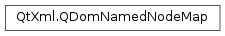

QDomNamedNodeMap¶
Synopsis¶
Functions¶
- def
__eq__(arg__1) - def
__ne__(arg__1) - def
contains(name) - def
count() - def
isEmpty() - def
item(index) - def
length() - def
namedItem(name) - def
namedItemNS(nsURI, localName) - def
removeNamedItem(name) - def
removeNamedItemNS(nsURI, localName) - def
setNamedItem(newNode) - def
setNamedItemNS(newNode) - def
size()
Detailed Description¶
The
PySide2.QtXml.QDomNamedNodeMapclass contains a collection of nodes that can be accessed by name.Note that
PySide2.QtXml.QDomNamedNodeMapdoes not inherit fromPySide2.QtXml.QDomNodeList. QDomNamedNodeMaps do not provide any specific node ordering. Although nodes in aPySide2.QtXml.QDomNamedNodeMapmay be accessed by an ordinal index, this is simply to allow a convenient enumeration of the contents of aPySide2.QtXml.QDomNamedNodeMap, and does not imply that the DOM specifies an ordering of the nodes.The
PySide2.QtXml.QDomNamedNodeMapis used in three places:
QDomDocumentType.entities()returns a map of all entities described in the DTD.QDomDocumentType.notations()returns a map of all notations described in the DTD.QDomNode.attributes()returns a map of all attributes of an element.Items in the map are identified by the name which QDomNode::name() returns. Nodes are retrieved using
PySide2.QtXml.QDomNamedNodeMap.namedItem(),PySide2.QtXml.QDomNamedNodeMap.namedItemNS()orPySide2.QtXml.QDomNamedNodeMap.item(). New nodes are inserted withPySide2.QtXml.QDomNamedNodeMap.setNamedItem()orPySide2.QtXml.QDomNamedNodeMap.setNamedItemNS()and removed withPySide2.QtXml.QDomNamedNodeMap.removeNamedItem()orPySide2.QtXml.QDomNamedNodeMap.removeNamedItemNS(). UsePySide2.QtXml.QDomNamedNodeMap.contains()to see if an item with the given name is in the named node map. The number of items is returned byPySide2.QtXml.QDomNamedNodeMap.length().Terminology: in this class we use “item” and “node” interchangeably.
-
class
PySide2.QtXml.QDomNamedNodeMap¶ -
class
PySide2.QtXml.QDomNamedNodeMap(arg__1) Parameters: arg__1 – PySide2.QtXml.QDomNamedNodeMapConstructs an empty named node map.
Constructs a copy of
n.
-
PySide2.QtXml.QDomNamedNodeMap.contains(name)¶ Parameters: name – unicode Return type: PySide2.QtCore.boolReturns
trueif the map contains a node calledname; otherwise returnsfalse.Note
This function does not take the presence of namespaces into account. Use
PySide2.QtXml.QDomNamedNodeMap.namedItemNS()to test whether the map contains a node with a specific namespace URI and name.
-
PySide2.QtXml.QDomNamedNodeMap.count()¶ Return type: PySide2.QtCore.intThis function is provided for Qt API consistency. It is equivalent to
PySide2.QtXml.QDomNamedNodeMap.length().
-
PySide2.QtXml.QDomNamedNodeMap.isEmpty()¶ Return type: PySide2.QtCore.boolReturns
trueif the map is empty; otherwise returnsfalse. This function is provided for Qt API consistency.
-
PySide2.QtXml.QDomNamedNodeMap.item(index)¶ Parameters: index – PySide2.QtCore.intReturn type: PySide2.QtXml.QDomNodeRetrieves the node at position
index.This can be used to iterate over the map. Note that the nodes in the map are ordered arbitrarily.
-
PySide2.QtXml.QDomNamedNodeMap.length()¶ Return type: PySide2.QtCore.intReturns the number of nodes in the map.
-
PySide2.QtXml.QDomNamedNodeMap.namedItem(name)¶ Parameters: name – unicode Return type: PySide2.QtXml.QDomNodeReturns the node called
name.If the named node map does not contain such a node, a
null nodeis returned. A node’s name is the name returned byQDomNode.nodeName().
-
PySide2.QtXml.QDomNamedNodeMap.namedItemNS(nsURI, localName)¶ Parameters: - nsURI – unicode
- localName – unicode
Return type: Returns the node associated with the local name
localNameand the namespace URInsURI.If the map does not contain such a node, a
null nodeis returned.
-
PySide2.QtXml.QDomNamedNodeMap.__ne__(arg__1)¶ Parameters: arg__1 – PySide2.QtXml.QDomNamedNodeMapReturn type: PySide2.QtCore.boolReturns
trueifnand this named node map are not equal; otherwise returnsfalse.
-
PySide2.QtXml.QDomNamedNodeMap.__eq__(arg__1)¶ Parameters: arg__1 – PySide2.QtXml.QDomNamedNodeMapReturn type: PySide2.QtCore.boolReturns
trueifnand this named node map are equal; otherwise returnsfalse.
-
PySide2.QtXml.QDomNamedNodeMap.removeNamedItem(name)¶ Parameters: name – unicode Return type: PySide2.QtXml.QDomNodeRemoves the node called
namefrom the map.The function returns the removed node or a
null nodeif the map did not contain a node calledname.
-
PySide2.QtXml.QDomNamedNodeMap.removeNamedItemNS(nsURI, localName)¶ Parameters: - nsURI – unicode
- localName – unicode
Return type: Removes the node with the local name
localNameand the namespace URInsURIfrom the map.The function returns the removed node or a
null nodeif the map did not contain a node with the local namelocalNameand the namespace URInsURI.
-
PySide2.QtXml.QDomNamedNodeMap.setNamedItem(newNode)¶ Parameters: newNode – PySide2.QtXml.QDomNodeReturn type: PySide2.QtXml.QDomNodeInserts the node
newNodeinto the named node map. The name used by the map is the node name ofnewNodeas returned byQDomNode.nodeName().If the new node replaces an existing node, i.e. the map contains a node with the same name, the replaced node is returned.
-
PySide2.QtXml.QDomNamedNodeMap.setNamedItemNS(newNode)¶ Parameters: newNode – PySide2.QtXml.QDomNodeReturn type: PySide2.QtXml.QDomNodeInserts the node
newNodein the map. If a node with the same namespace URI and the same local name already exists in the map, it is replaced bynewNode. If the new node replaces an existing node, the replaced node is returned.
-
PySide2.QtXml.QDomNamedNodeMap.size()¶ Return type: PySide2.QtCore.intThis function is provided for Qt API consistency. It is equivalent to
PySide2.QtXml.QDomNamedNodeMap.length().
© 2018 The Qt Company Ltd. Documentation contributions included herein are the copyrights of their respective owners. The documentation provided herein is licensed under the terms of the GNU Free Documentation License version 1.3 as published by the Free Software Foundation. Qt and respective logos are trademarks of The Qt Company Ltd. in Finland and/or other countries worldwide. All other trademarks are property of their respective owners.